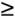
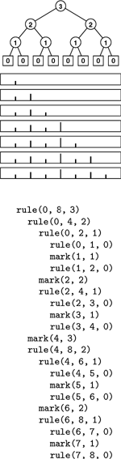
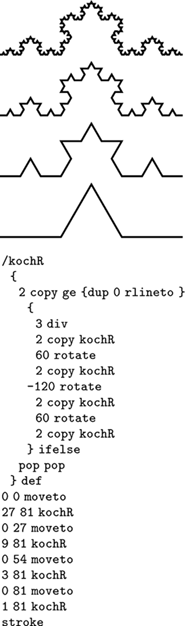

C++ Programming Robert Sedgewick - Princeton University Addison Wesley Professional Algorithms in C++, Parts 1–4: Fundamentals, Data Structure, Sorting, Searching, Third Edition
5.2. Divide and Conquer
Many of the recursive programs that we consider in this book use two recursive calls, each operating on about one-half of the input. This recursive scheme is perhaps the most important instance of the well-known divide-and-conquer paradigm for algorithm design, which serves as the basis for many of our most important algorithms.
As an example, let us consider the task of finding the maximum among N items stored in an array a[0],. . . , a[N-1]. We can easily accomplish this task with a single pass through the array, as follows:
for (t = a[0], i = 1; i < N; i++)
if (a[i] > t) t = a[i];
The recursive divide-and-conquer solution given in Program 5.6 is also a simple (entirely different) algorithm for the same problem; we use it to illustrate the divide-and-conquer concept.
Program 5.6. Divide-and-conquer to find the maximum|
This function divides an array a[l], . . . , a[r] into a[l], . . . , a[m] and a[m+1], . . . , a[r], finds the maximum elements in the two parts (recursively), and returns the larger of the two as the maximum element in the whole array. It assumes that Item is a first-class type for which > is defined. If the array size is even, the two parts are equal in size; if the array size is odd, the sizes of the two parts differ by 1.
Item max(Item a[], int l, int r)
{
if (l == r) return a[l];
int m = (l+r)/2;
Item u = max(a, l, m);
Item v = max(a, m+1, r);
if (u > v) return u; else return v;
}
|
Most often, we use the divide-and-conquer approach because it provides solutions faster than those available with simple iterative algorithms (we shall discuss several examples at the end of this section), but it also is worthy of close examination as a way of understanding the nature of certain fundamental computations.
Figure 5.4 shows the recursive calls that are made when Program 5.6 is invoked for a sample array. The underlying structure seems complicated, but we normally do not need to worry about it—we depend on a proof by induction that the program works, and we use a recurrence relation to analyze the program's performance.
This sequence of function calls illustrates the dynamics of finding the maximum with a recursive algorithm.
As usual, the code itself suggests the proof by induction that it performs the desired computation:
It finds the maximum for arrays of size 1 explicitly and immediately. For N > 1, it partitions the array into two arrays of size less than N, finds the maximum of the two parts by the inductive hypothesis, and returns the larger of these two values, which must be the maximum value in the whole array.
Moreover, we can use the recursive structure of the program to understand its performance characteristics.
Property 5.1. A recursive function that divides a problem of size N into two independent (nonempty) parts that it solves recursively calls itself less than N times|
If the parts are one of size k and one of size N – k, then the total number of recursive function calls that we use is
TN = Tk + TN–k + 1, for N  1 with T1 = 0.
The solution TN = N – 1 is immediate by induction. If the sizes sum to a value less than N, the proof that the number of calls is less than N – 1 follows the same inductive argument. We can prove analogous results under general conditions (see Exercise 5.20).
|
Program 5.6 is representative of many divide-and-conquer algorithms with precisely the same recursive structure, but other examples may differ in two primary respects. First, Program 5.6 does a constant amount of work on each function call, so its total running time is linear. Other divide-and-conquer algorithms may perform more work on each function call, as we shall see, so determining the total running time requires more intricate analysis. The running time of such algorithms depends on the precise manner of division into parts. Second, Program 5.6 is representative of divide-and-conquer algorithms for which the parts sum to make the whole. Other divide-and-conquer algorithms may divide into smaller parts that constitute less than the whole problem, or overlapping parts that total up to more than the whole problem. These algorithms are still proper recursive algorithms because each part is smaller than the whole, but analyzing them is more difficult than analyzing Program 5.6. We shall consider the analysis of these different types of algorithms in detail as we encounter them.
For example, the binary-search algorithm that we studied in Section 2.6 is a divide-and-conquer algorithm that divides a problem in half, then works on just one of the halves. We examine a recursive implementation of binary search in Chapter 12.
Figure 5.5 indicates the contents of the internal stack maintained by the programming environment to support the computation in Figure 5.4. The model depicted in the figure is idealistic, but it gives useful insights into the structure of the divide-and-conquer computation. If a program has two recursive calls, the actual internal stack contains one entry corresponding to the first function call while that function is being executed (which contains values of arguments, local variables, and a return address), then a similar entry corresponding to the second function call while that function is being executed. The alternative that is depicted in Figure 5.5 is to put the two entries on the stack at once, keeping all the subtasks remaining to be done explicitly on the stack. This arrangement plainly delineates the computation, and sets the stage for more general computational schemes, such as those that we examine in Sections 5.6 and 5.8.
This sequence is an idealistic representation of the contents of the internal stack during the sample computation of Figure 5.4. We start with the left and right indices of the whole subarray on the stack. Each line depicts the result of popping two indices and, if they are not equal, pushing four indices, which delimit the left subarray and the right subarray after the popped subarray is divided into two parts. In practice, the system keeps return addresses and local variables on the stack, instead of this specific representation of the work to be done, but this model suffices to describe the computation.
Figure 5.6 depicts the structure of the divide-and-conquer find-the-maximum computation. It is a recursive structure: the node at the top contains the size of the input array, the structure for the left subarray is drawn at the left and the structure for the right subarray is drawn at the right. We will formally define and discuss tree structures of this type in Sections 5.4 and 5.5. They are useful for understanding the structure of any program involving nested function calls—recursive programs in particular. Also shown in Figure 5.6 is the same tree, but with each node labeled with the return value for the corresponding function call. In Section 5.7, we shall consider the process of building explicit linked structures that represent trees like this one.
The divide-and-conquer algorithm splits a problem of size 11 into one of size 6 and one of size 5, a problem of size 6 into two problems of size 3, and so forth, until reaching problems of size 1 (top). Each circle in these diagrams represents a call on the recursive function, to the nodes just below connected to it by lines (squares are those calls for which the recursion terminates). The diagram in the middle shows the value of the index into the middle of the file that we use to effect the split; the diagram at the bottom shows the return value.
No discussion of recursion would be complete without the ancient towers of Hanoi problem. We have three pegs and N disks that fit onto the pegs. The disks differ in size, and are initially arranged on one of the pegs, in order from largest (disk N) at the bottom to smallest (disk 1) at the top. The task is to move the stack of disks to the right one position (peg), while obeying the following rules: (i) only one disk may be shifted at a time; and (ii) no disk may be placed on top of a smaller one. One legend says that the world will end when a certain group of monks accomplishes this task in a temple with 40 golden disks on three diamond pegs.
Program 5.7 gives a recursive solution to the problem. It specifies which disk should be shifted at each step, and in which direction (+ means move one peg to the right, cycling to the leftmost peg when on the rightmost peg; and - means move one peg to the left, cycling to the rightmost peg when on the leftmost peg). The recursion is based on the following idea: To move N disks one peg to the right, we first move the top N – 1 disks one peg to the left, then shift disk N one peg to the right, then move the N – 1 disks one more peg to the left (onto disk N). We can verify that this solution works by induction. Figure 5.7 shows the moves for N = 5 and the recursive calls for N = 3. An underlying pattern is evident, which we now consider in detail.
This diagram depicts the solution to the towers of Hanoi problem for five disks. We shift the top four disks left one position (left column), then move disk 5 to the right, then shift the top four disks left one position (right column). The sequence of function calls that follows constitutes the computation for three disks. The computed sequence of moves is +1 -2 +1 +3 +1 -2 +1, which appears four times in the solution (for example, the first seven moves).
First, the recursive structure of this solution immediately tells us the number of moves that the solution requires.
Property 5.2. The recursive divide-and-conquer algorithm for the towers of Hanoi problem produces a solution that has 2N – 1 moves|
As usual, it is immediate from the code that the number of moves satisfies a recurrence. In this case, the recurrence satisfied by the number of disk moves is similar to Formula 2.5:
TN = 2TN – 1 + 1, for N 2 with T1 = 1.
We can verify the stated result directly by induction: we have T(1) = 21 – 1 = 1; and, if T(k) = 2k – 1 for k < N, then T(N) = 2(2N – 1 – 1) + 1 = 2N – 1.
|
If the monks are moving disks at the rate of one per second, it will take at least 348 centuries for them to finish (see Figure 2.1), assuming that they do not make a mistake. The end of the world is likely be even further off than that because those monks presumably never have had the benefit of being able to use Program 5.7, and might not be able to figure out so quickly which disk to move next. We now consider an analysis of the method that leads to a simple (nonrecursive) method that makes the decision easy. While we may not wish to let the monks in on the secret, it is relevant to numerous important practical algorithms.
Program 5.7. Solution to the towers of Hanoi|
We shift the tower of disks to the right by (recursively) shifting all but the bottom disk to the left, then shifting the bottom disk to the right, then (recursively) shifting the tower back onto the bottom disk.
void hanoi(int N, int d)
{
if (N == 0) return;
hanoi(N-1, -d);
shift(N, d);
hanoi(N-1, -d);
}
|
To understand the towers of Hanoi solution, let us consider the simple task of drawing the markings on a ruler. Each inch on the ruler has a mark at the 1/2 inch point, slightly shorter marks at 1/4 inch intervals, still shorter marks at 1/8 inch intervals, and so forth. Our task is to write a program to draw these marks at any given resolution, assuming that we have at our disposal a procedure mark(x, h) to make a mark h units high at position x.
If the desired resolution is 1/2n inches, we rescale so that our task is to put a mark at every point between 0 and 2n, endpoints not included. Thus, the middle mark should be n units high, the marks in the middle of the left and right halves should be n – 1 units high, and so forth. Program 5.8 is a straightforward divide-and-conquer algorithm to accomplish this objective; Figure 5.8 illustrates it in operation on a small example. Recursively speaking, the idea behind the method is the following. To make the marks in an interval, we first divide the interval into two equal halves. Then, we make the (shorter) marks in the left half (recursively), the long mark in the middle, and the (shorter) marks in the right half (recursively). Iteratively speaking, Figure 5.8 illustrates that the method makes the marks in order, from left to right—the trick lies in computing the lengths. The recursion tree in the figure helps us to understand the computation: Reading down, we see that the length of the mark decreases by 1 for each recursive function call. Reading across, we get the marks in the order that they are drawn, because, for any given node, we first draw the marks associated with the function call on the left, then the mark associated with the node, then the marks associated with the function call on the right.
This sequence of function calls constitutes the computation for drawing a ruler of length 8, resulting in marks of lengths 1, 2, 1, 3, 1, 2, and 1.

Program 5.8. Divide and conquer to draw a ruler|
To draw the marks on a ruler, we draw the marks on the left half, then draw the longest mark in the middle, then draw the marks on the right half. This program is intended to be used with r – l equal to a power of 2—a property that it preserves in its recursive calls (see Exercise 5.27).
void rule(int l, int r, int h)
{ int m = (l+r)/2;
if (h > 0)
{
rule(l, m, h-1);
mark(m, h);
rule(m, r, h-1);
}
}
|
We see immediately that the sequence of lengths is precisely the same as the sequence of disks moved for the towers of Hanoi problem. Indeed, a simple proof that they are identical is that the recursive programs are the same. Put another way, our monks could use the marks on a ruler to decide which disk to move.
Moreover, both the towers of Hanoi solution in Program 5.7 and the ruler-drawing program in Program 5.8 are variants of the basic divide-and-conquer scheme exemplified by Program 5.6. All three solve a problem of size 2n by dividing it into two problems of size 2n – 1. For finding the maximum, we have a linear-time solution in the size of the input; for drawing a ruler and for solving the towers of Hanoi, we have a linear-time solution in the size of the output. For the towers of Hanoi, we normally think of the solution as being exponential time, because we measure the size of the problem in terms of the number of disks, n.
It is easy to draw the marks on a ruler with a recursive program, but is there some simpler way to compute the length of the ith mark, for any given i? Figure 5.9 shows yet another simple computational process that provides the answer to this question. The ith number printed out by both the towers of Hanoi program and the ruler program is nothing other than the number of trailing 0 bits in the binary representation of i. We can prove this property by induction by correspondence with a divide-and-conquer formulation for the process of printing the table of n-bit numbers: Print the table of (n – 1)-bit numbers, each preceded by a 0 bit, then print the table of (n – 1)-bit numbers each preceded by a 1-bit (see Exercise 5.25).
Computing the ruler function is equivalent to counting the number of trailing zeros in the even N-bit numbers.
For the towers of Hanoi problem, the implication of the correspondence with n-bit numbers is a simple algorithm for the task. We can move the pile one peg to the right by iterating the following two steps until done:
1. | Move the small disk to the right if n is odd (left if n is even).
| 1. | Make the only legal move not involving the small disk.
|
That is, after we move the small disk, the other two pegs contain two disks, one smaller than the other. The only legal move not involving the small disk is to move the smaller one onto the larger one. Every other move involves the small disk for the same reason that every other number is odd and that every other mark on the rule is the shortest. Perhaps our monks do know this secret, because it is hard to imagine how they might be deciding which moves to make otherwise.
A formal proof by induction that every other move in the towers of Hanoi solution involves the small disk (beginning and ending with such moves) is instructive: For n = 1, there is just one move, involving the small disk, so the property holds. For n > 1, the assumption that the property holds for n – 1 implies that it holds for n by the recursive construction: The first solution for n – 1 begins with a small-disk move, and the second solution for n – 1 ends with a small-disk move, so the solution for n begins and ends with a small-disk move. We put a move not involving the small disk in between two moves that do involve the small disk (the move ending the first solution for n – 1 and the move beginning the second solution for n – 1), so the property that every other move involves the small disk is preserved.
Program 5.9. Nonrecursive program to draw a ruler|
In contrast to Program 5.8, we can also draw a ruler by first drawing all the marks of length 1, then drawing all the marks of length 2, and so forth. The variable t carries the length of the marks and the variable j carries the number of marks in between two successive marks of length t. The outer for loop increments t and preserves the property j = 2t–1. The inner for loop draws all the marks of length t.
void rule(int l, int r, int h)
{
for (int t = 1, j = 1; t <= h; j += j, t++)
for (int i = 0; l+j+i <= r; i += j+j)
mark(l+j+i, t);
}
|
Program 5.9 is an alternate way to draw a ruler that is inspired by the correspondence to binary numbers (see Figure 5.10). We refer to this version of the algorithm as a bottom-up implementation. It is not recursive, but it is certainly suggested by the recursive algorithm. This correspondence between divide-and-conquer algorithms and the binary representations of numbers often provides insights for analysis and development of improved versions, such as bottom-up approaches. We consider this perspective to understand, and possibly to improve, each of the divide-and-conquer algorithms that we examine.
To draw a ruler nonrecursively, we alternate drawing marks of length 1 and skipping positions, then alternate drawing marks of length 2 and skipping remaining positions, then alternate drawing marks of length 3 and skipping remaining positions, and so forth.
The bottom-up approach involves rearranging the order of the computation when we are drawing a ruler. Figure 5.11 shows another example, where we rearrange the order of the three function calls in the recursive implementation. It reflects the recursive computation in the way that we first described it: Draw the middle mark, then draw the left half, then draw the right half. The pattern of drawing the marks is complex, but is the result of simply exchanging two statements in Program 5.8. As we shall see in Section 5.6, the relationship between Figures 5.8 and 5.11 is akin to the distinction between postfix and prefix in arithmetic expressions.
This sequence indicates the result of drawing marks before the recursive calls, instead of in between them.
Drawing the marks in order as in Figure 5.8 might be preferable to doing the rearranged computations contained in Program 5.9 and indicated in Figure 5.11, because we can draw an arbitrarily long ruler, if we imagine a drawing device that simply moves on to the next mark in a continuous scroll. Similarly, to solve the towers of Hanoi problem, we are constrained to produce the sequence of disk moves in the order that they are to be performed. In general, many recursive programs depend on the subproblems being solved in a particular order. For other computations (see, for example, Program 5.6), the order in which we solve the subproblems is irrelevant. For such computations, the only constraint is that we must solve the subproblems before we can solve the main problem. Understanding when we have the flexibility to reorder the computation not only is a secret to success in algorithm design, but also has direct practical effects in many contexts. For example, this matter is critical when we consider implementing algorithms on parallel processors.
The bottom-up approach corresponds to the general method of algorithm design where we solve a problem by first solving trivial subproblems, then combining those solutions to solve slightly bigger subproblems, and so forth, until the whole problem is solved. This approach might be called combine and conquer.
It is a small step from drawing rulers to drawing two-dimensional patterns such as Figure 5.12. This figure illustrates how a simple recursive description can lead to a computation that appears to be complex (see Exercise 5.30).
This fractal is a two-dimensional version of Figure 5.10. The outlined boxes in the bottom diagram highlight the recursive structure of the computation.
Recursively defined geometric patterns such as Figure 5.12 are sometimes called fractals. If more complicated drawing primitives are used, and more complicated recursive invocations are involved (especially including recursively-defined functions on reals and in the complex plane), patterns of remarkable diversity and complexity can be developed. Another example, demonstrated in Figure 5.13, is the Koch star, which is defined recursively as follows: A Koch star of order 0 is the simple hill example of Figure 4.3, and a Koch star of order n is a Koch star of order n – 1 with each line segment replaced by the star of order 0, scaled appropriately.
This modification to the PostScript program of Figure 4.3 transforms the output into a fractal (see text).

Like the ruler-drawing and the towers of Hanoi solutions, these algorithms are linear in the number of steps, but that number is exponential in the maximum depth of the recursion (see Exercises 5.29 and 5.33). They also can be directly related to counting in an appropriate number system (see Exercise 5.34).
The towers of Hanoi problem, ruler-drawing problem, and fractals are amusing; and the connection to binary numbers is surprising, but our primary interest in all of these topics is that they provide us with insights in understanding the basic algorithm design paradigm of divide in half and solve one or both halves independently, which is perhaps the most important such technique that we consider in this book. Table 5.1 includes details about binary search and mergesort, which not only are important and widely used practical algorithms, but also exemplify the divide-and-conquer algorithm design paradigm.
Table 5.1. Basic divide-and-conquer algorithmsBinary search (see Chapters 2 and 12) and mergesort (see Chapter 8) are prototypical divide-and-conquer algorithms that provide guaranteed optimal performance for searching and sorting, respectively. The recurrences indicate the nature of the divide-and-conquer computation for each algorithm. (See Sections 2.5 and 2.6 for derivations of the solutions in the rightmost column.) Binary search splits a problem in half, does 1 comparison, then makes a recursive call for one of the halves. Merge-sort splits a problem in half, then works on both halves recursively, then does N comparisons. Throughout the book, we shall consider numerous other algorithms developed with these recursive schemes. | | | recurrence | approximate solution | binary search | | | comparisons | CN = CN/2 + 1 | lg N | mergesort | | | recursive calls | AN = 2AN/2 + 1 | N | comparisons | CN = 2CN/2 + N | N lg N |
Quicksort (see Chapter 7) and binary-tree search (see Chapter 12) represent a significant variation on the basic divide-and-conquer theme where the problem is split into subproblems of size k – 1 and N – k, for some value k, which is determined by the input. For random input, these algorithms divide a problem into subproblems that are half the size (as in mergesort or in binary search) on the average. We study the analysis of the effects of this difference when we discuss these algorithms.
Other variations on the basic theme that are worthy of consideration include these: divide into parts of varying size, divide into more than two parts, divide into overlapping parts, and do various amounts of work in the nonrecursive part of the algorithm. In general, divide-and-conquer algorithms involve doing work to split the input into pieces, or to merge the results of processing two independent solved portions of the input, or to help things along after half of the input has been processed. That is, there may be code before, after, or in between the two recursive calls. Naturally, such variations lead to algorithms more complicated than are binary search and mergesort, and are more difficult to analyze. We consider numerous examples in this book; we return to advanced applications and analysis in Part 8.
Exercises | 5.16 Write a recursive program that finds the maximum element in an array, based on comparing the first element in the array against the maximum element in the rest of the array (computed recursively). | | 5.17 Write a recursive program that finds the maximum element in a linked list. | | 5.18 Modify the divide-and-conquer program for finding the maximum element in an array (Program 5.6) to divide an array of size N into one part of size k = 2 lg N lg N – 1 and another of size N – k (so that the size of at least one of the parts is a power of 2). – 1 and another of size N – k (so that the size of at least one of the parts is a power of 2). | | 5.19 Draw the tree corresponding to the recursive calls that your program from Exercise 5.18 makes when the array size is 11. | | | |  5.20 Prove by induction that the number of function calls made by any divide-and-conquer algorithm that divides a problem into parts that constitute the whole, then solves the parts recursively, is linear. 5.20 Prove by induction that the number of function calls made by any divide-and-conquer algorithm that divides a problem into parts that constitute the whole, then solves the parts recursively, is linear.
| | 5.21 Prove that the recursive solution to the towers of Hanoi problem (Program 5.7) is optimal. That is, show that any solution requires at least 2N–1 moves. | |  5.22 Write a recursive program that computes the length of the ith mark in a ruler with 2n–1 marks. 5.22 Write a recursive program that computes the length of the ith mark in a ruler with 2n–1 marks.
| |  5.23 Examine tables of n-bit numbers, such as Figure 5.9, to discover a property of the ith number that determines the direction of the ith move (indicated by the sign bit in Figure 5.7) for solving the towers of Hanoi problem. 5.23 Examine tables of n-bit numbers, such as Figure 5.9, to discover a property of the ith number that determines the direction of the ith move (indicated by the sign bit in Figure 5.7) for solving the towers of Hanoi problem.
| | 5.24 Write a program that produces a solution to the towers of Hanoi problem by filling in an array that holds all the moves, as in Program 5.9. | |  5.25 Write a recursive program that fills in an n-by-2n array with 0s and 1s such that the array represents all the n-bit binary numbers, as depicted in Figure 5.9. 5.25 Write a recursive program that fills in an n-by-2n array with 0s and 1s such that the array represents all the n-bit binary numbers, as depicted in Figure 5.9.
| | | | 5.26 Draw the results of using the recursive ruler-drawing program (Program 5.8) for these unintended values of the arguments: rule(0, 11, 4), rule(4, 20, 4), and rule(7, 30, 5). | | 5.27 Prove the following fact about the ruler-drawing program (Program 5.8): If the difference between its first two arguments is a power of 2, then both of its recursive calls have this property also. | | 5.28 Write a function that computes efficiently the number of trailing 0s in the binary representation of an integer. | | 5.29 How many squares are there in Figure 5.12 (counting the ones that are covered up by bigger squares)? | | 5.30 Write a recursive C++ program that outputs a PostScript program that draws the bottom diagram in Figure 5.12, in the form of a list of function calls x y r box, which draws an r-by-r square at (x,y). Implement box in PostScript (see Section 4.3). | | 5.31 Write a bottom-up nonrecursive program (similar to Program 5.9) that draws the bottom diagram in Figure 5.12, in the manner described in Exercise 5.30. | | 5.32 Write a PostScript program that draws the bottom diagram in Figure 5.12. | | 5.33 How many line segments are there in a Koch star of order n? | | 5.34 Drawing a Koch star of order n amounts to executing a sequence of commands of the form "rotate a degrees, then draw a line segment of length 1/3n." Find a correspondence with number systems that gives you a way to draw the star by incrementing a counter, then computing the angle a from the counter value. | | 5.35 Modify the Koch star program in Figure 5.13 to produce a different fractal based on a five-line figure for order 0, defined by 1-unit moves east, north, east, south, and east, in that order (see Figure 4.3). | | 5.36 Write a recursive divide-and-conquer function to draw an approximation to a line segment in an integer coordinate space, given the endpoints. Assume that all coordinates are between 0 and M. Hint: First plot a point close to the middle. |
|